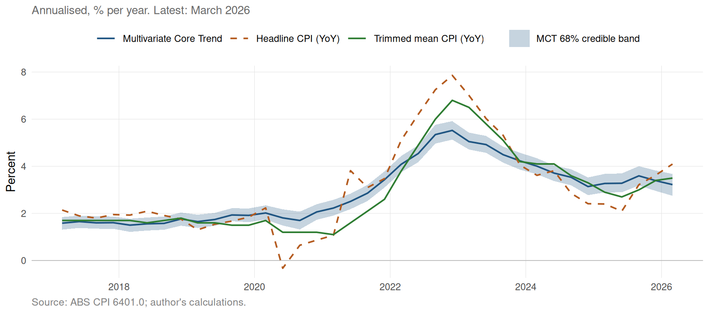
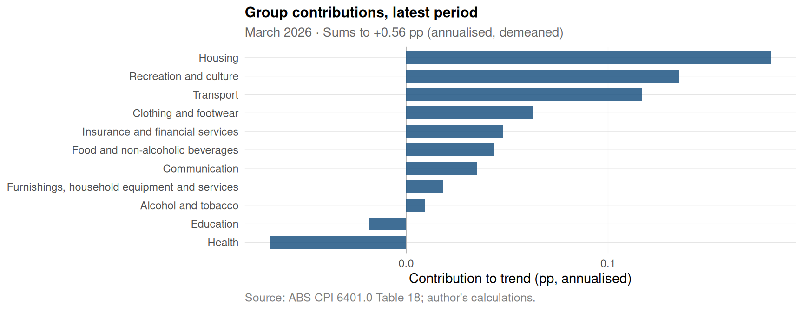
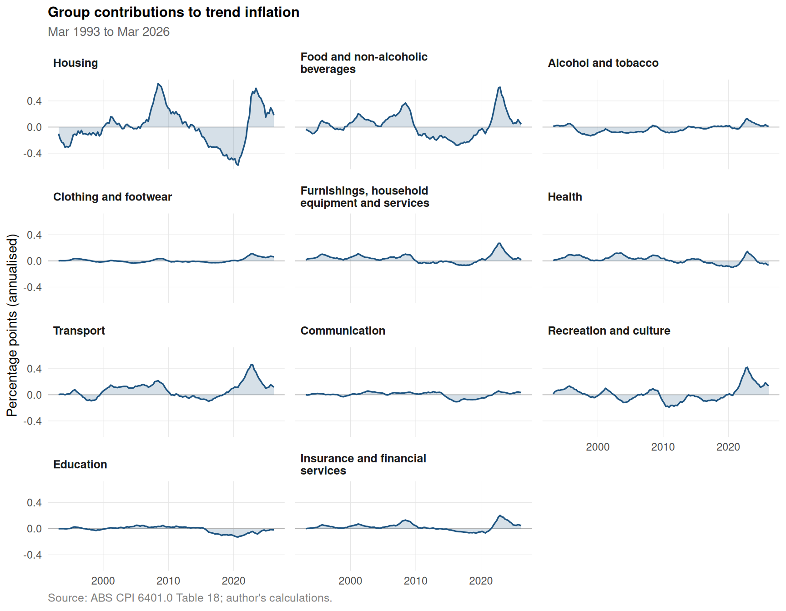
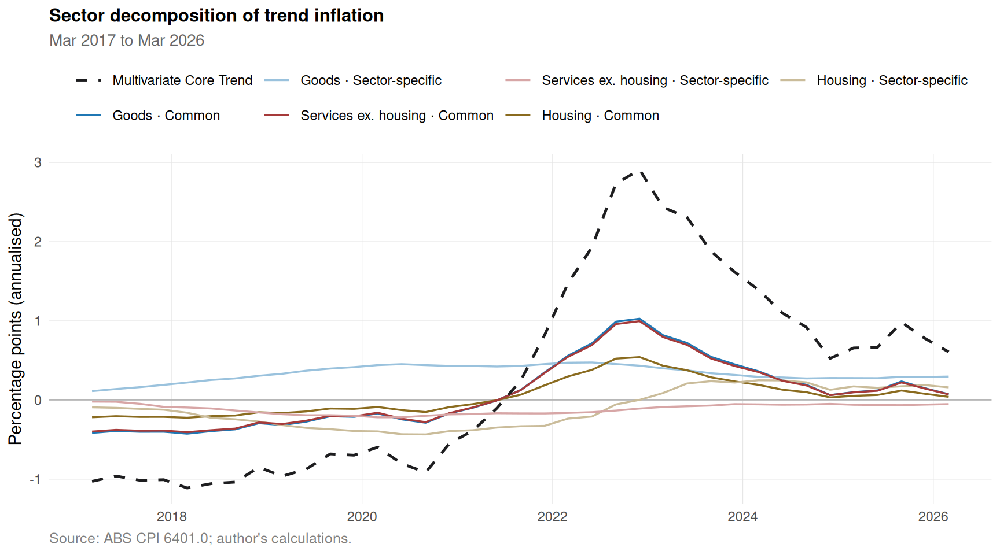
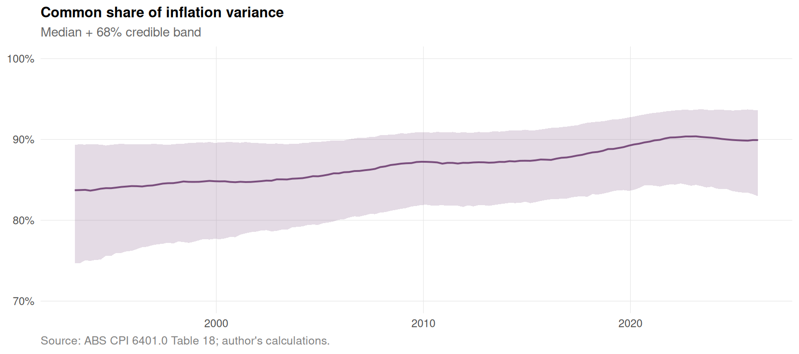

Australian Multivariate Core Trend Inflation
A Stock-Watson decomposition of quarterly ABS CPI sub-groups
Trend inflation
The model’s estimate of underlying inflation — median + 68% posterior credible band — plotted alongside headline CPI inflation (year-on-year) for context.
Group contributions to trend inflation
The 33 sub-group trend contributions \(w_i \cdot s_{i,t}\) aggregated back to the 11 standard ABS CPI groups. The bar chart ranks each group’s contribution to the most recent quarter; the small-multiples panel below traces every group’s contribution across the full sample.


Sector decomposition: common vs sector-specific
The trend is the weighted aggregate \(\tau_t = \sum_i w_i \big( \lambda_i c_t + s_{i,t} \big)\). Splitting that into a common part (broad-based drift from the common trend, \(\lambda_i c_t\), multiplied by each sub-group’s weight) and a sector-specific part (each sub-group’s own random-walk drift \(s_{i,t}\)), then aggregating to three macro buckets (Goods / Services ex. housing / Housing). Bands above zero pushed trend up; below zero pulled it down.

How much of the move is common?
The share of weighted-aggregate inflation variance attributable to the common trend (vs sub-group-specific idiosyncrasies). For AU sub-group inflation this is currently 90% (68% CI [83%, 94%]) — most inflation moves are broad-based across sub-groups, not driven by any single category. The y-axis is zoomed to the posterior range so period-to-period changes are visible; the absolute level has been high (>80%) for the entire sample.

Methodology
Let \(\pi_{i,t}\) be the annualised, demeaned quarter-on-quarter inflation of ABS CPI sub-group \(i \in \{1,\dots,33\}\) in quarter \(t\). The measurement equation is
\[ \pi_{i,t} = \lambda_i\, c_t + s_{i,t} + \exp(h^\varepsilon_{i,t}/2)\, s_{i,t}^{\text{out}}\, \big(u_{i,t} + \theta_i u_{i,t-1}\big), \]
where \(\lambda_i\) is a sub-group-specific loading on the common trend (\(\lambda_{\text{Rents}} = 1\) pins identification), \(u_{i,t} \sim \mathcal{N}(0,1)\), and \(\theta_i\) is a sub-group-specific MA(1) coefficient that lets a shock to sector \(i\) bleed out into the next quarter. \(s_{i,t}^{\text{out}}\) is a per-observation scale-mixture indicator: most periods take \(s = 1\) (normal observation) but a Bernoulli gate \(\Pr(s = 1) = p_i\) allows the model to flag anomalous-volatility quarters and discount their influence on the trend. State equations are random walks with stochastic volatility:
\[ c_t = c_{t-1} + \exp(h^c_t/2)\,\eta^c_t, \qquad s_{i,t} = s_{i,t-1} + \exp(h^s_{i,t}/2)\,\eta^s_{i,t}. \]
Log-volatilities \(h^c_t\), \(h^s_{i,t}\), \(h^\varepsilon_{i,t}\) are themselves random walks. Trend is the weighted aggregate \(\tau_t = \sum_i w_i\big(\lambda_i c_t + s_{i,t}\big)\) with weights from the ABS 2025 Weighting Pattern (sub-group level, sums to 1).
The model specification follows the NY Fed Multivariate Core Trend (MCT) — see Almuzara and Sbordone, “Inflation Persistence: How Much Is There and Where Is It Coming From?”, Liberty Street Economics, April 2022. This dashboard applies that methodology to Australian CPI data: 33 ABS sub-groups (seasonally adjusted) at quarterly frequency, with an MA(1) sector-noise component and a scale-mixture outlier mechanism. Estimated by Gibbs sampling (a custom R port of the NY Fed MATLAB sampler) on the inflation-targeting-era sample (1993-Q%q to 2026-Q%q, T = 133 quarters, N = 33 sub-groups).
Built with R, targets and Quarto. Re-runs automatically each quarter on the publication day of the ABS CPI release.